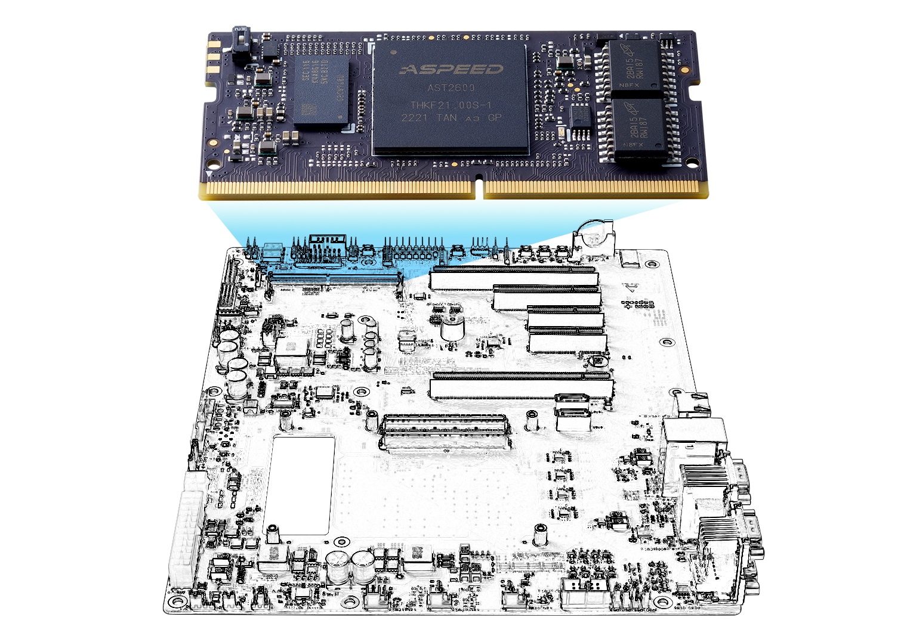
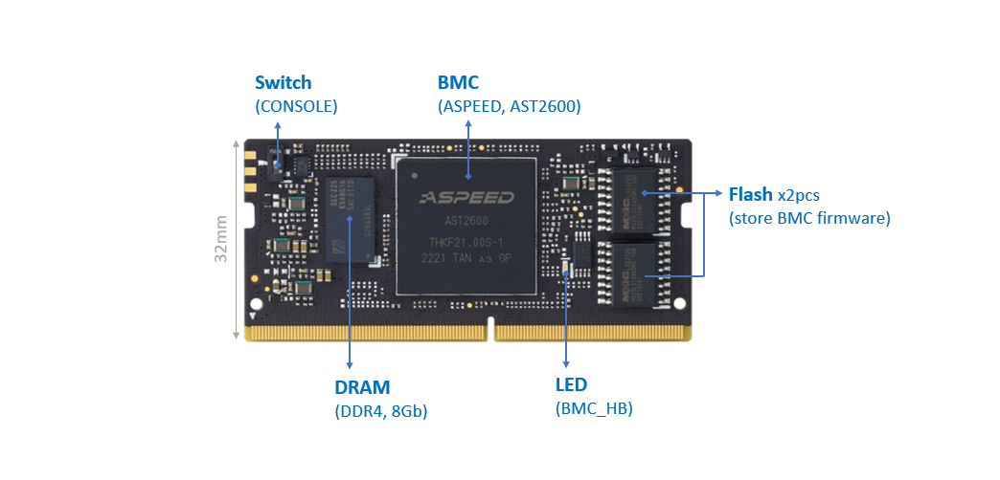
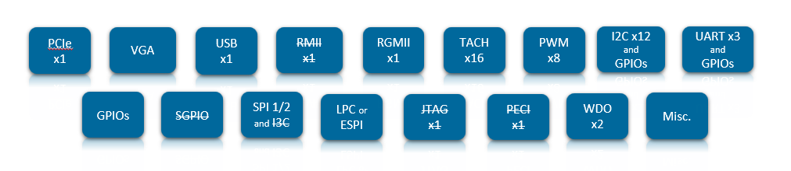
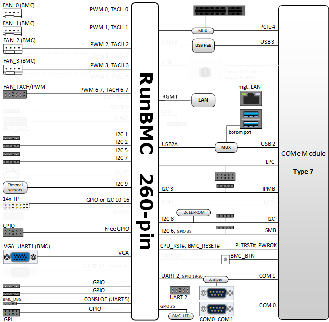
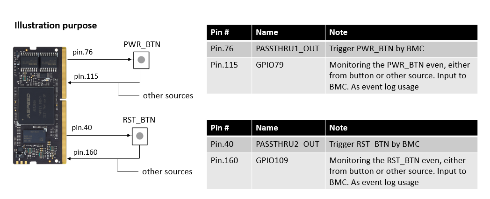
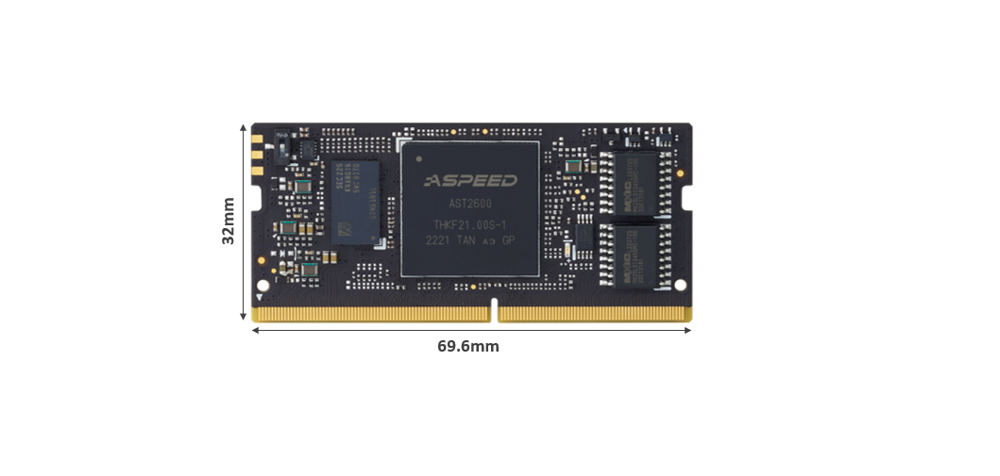

Smart Efficiency for Limitless Edge Management  RunBMC-AST2600 module is an ASPEED AST2600 BMC chip-based hardware and software solution as your building block for quick prototyping and saving your Total Cost of Ownership. Building block concept leverages RunBMC module form factor that is defined by BMC daughter board I/O from OCP. RunBMC-AST2600 module is designed to interface with host system, such as COM Express module, via PCIe/USB for KVM and UART for SOL and IPMB for monitoring CPU related temperature, voltage, current, and several I2C/SMB/GPIOs. Some of the interfaces will be accessed either through IPMItool (command line) or WebUI, get detail from IPMI Software Support Specification  Core Feature Remote management usage, up to 1000Mbit/s speed Remote HTLM5 based KVM (graphics) console Virtual Media and IOS images Remote server power control Remote Serial over LAN (text console) Event Log support Hardware Monitoring (Voltage,RPM,Temperature,CPUStatus…etc) Overall health display on the main page (dashboard) Out of band management through shared or dedicated LAN Option to change LAN connection interface at Runtime System Firewall LDAP/AD/RADIUS Support Remote BIOS/BMC Update Event Log Filter User Management Media Redirection Settings PAM Order Settings SSL settings SMTP Settings FRU Information Hardware Interface Interface and pin-out leverages RunBMC Rev. 1.4.1 specifications.  1x PCIe Gen2 1x USB 1x VGA 1x RGMII 8x PWM and maximum 16x TACH Up to 12x I2C and multiple GPIOs (for user) Up to 3x UART and multiple GPIOs (for user) GPIOs (some of them are used for communication with CPU, some of them are free for user) 1x LPC multiple SPI (not for user) Misc. and Watchdog Block Diagram Diagram below illustrates how the RunBMC module interfaces with COM Express Type 7 Module/Carrier.  Note : interfaces marked with * are not enabled. Interfaces marked with a dash could be enabled by specific HW/FW rework. Pinout & Signal Description Pin Summary The table below shows a comprehensible list of all signal pins supported on the 260-pin RunBMC edge connectors as defined by RunBMC Rev. 1.4.1 specification. Signals described in the specification but not supported on the RunBMC-AST2600 are marked with strikethrough. In addition, most pins are multi-functional, thus are dependent on the firmware porting. Get the default features in Signal Description Pin# Name Name Pin# 1 VDD_12V_STBY VDD_RGMII_REF 2 3 VDD3_3V_STBY VDD3_3V_STBY 4 5 VDD3_3V_STBY VDD3_3V_STBY 6 7 VDD3_3V_STBY GND 8 9 GND DACG 10 11 GND DACB 12 13 GPIO0_SGPMLD DACR 14 15 GPIO1_SGPMI VGAHS 16 17 GPIO3_SGPMO VGAVS 18 19 GPIO5_SGPMCK DDCCLK 20 21 CONSOLERX (UART5) DDCDAT 22 23 CONSOLETX (UART5) GND 24 25 GPIO7 PWM0 26 27 PWM2 PWM1 28 29 PWM4 PWM3 30 31 PWM6 PWM5 32 33 GND PWM7 34 35 GPIO15 (as UART1_CTS) GPIO19 (as UART2_CTS, for SOL) 36 37 GPIO17 (as UART1_RTC) GPIO20 (as UART2_RTS, for SOL) 38 39 GND PASSTHRU2_OUT (as RST_BTN) 40 41 UART1RX_GPIO23 UART2RX (for SOL) 42 43 UART1TX_GPIO0 UART2TX (for SOL) 44 45 GND GPIO25 (as BMC_LED) 46 47 I2C8SCL I2C13SCL 48 49 I2C8SDA I2C13SDA 50 51 GND GND 52 53 I2C7SCL I2C6SCL (as SMBus) 54 55 I2C7SDA I2C6SDA (as SMBus) 56 57 GND GND 58 59 FWSPIWP# I2C5SCL 60 61 GPIO37 (as part of FWSPI usage) I2C5SDA 62 63 FWSPICS0# GND 64 65 FWSPIMOSI_IO0 GPIO38 (as SMBus_ALERT) 66 67 FWSPIMISO_IO1 GPIO39 (as Board_ID) 68 69 FWSPI_IO2_GPIO41 GPIO40 (as Board_ID) 70 71 FWSPI_IO3_GPIO43 GPIO42 (as Board_ID) 72 73 FWSPICK GPIO44 74 75 FWSPICS1# PASSTHRU1_OUT (as PWR_BTN) 76 77 PWRGD TACH0 78 79 GPIO47 (as Carrier_HOT) TACH1 80 81 GPIO49 (as UID_LED) TACH2 82 83 WDTRST2_GPIO51 TACH3 84 85 GPIO53 (as Power_Good_3V3) TACH4 86 87 GPIO55 TACH5 88 89 GPIO57 TACH6 90 91 WDTRST1_GPIO59 TACH7 92 93 GPIO61 TACH8 94 95 GPIO63 TACH9 96 97 CPU_RST# TACH10 98 99 GPIO67 TACH11 100 101 GPIO69 (as SUS_S3) TACH12 102 103 GPIO71 (as SUS_S4) TACH13 104 105 GPIO73 TACH14 106 107 GPIO75 (as BIOS_SPI_CS) TACH15 108 109 GPIO76 GND 110 111 PECIVDD PECI 112 113 GPIO77 GND 114 115 GPIO79 (as PWR_BTN) SPI2CK_GPIO78 116 117 GPIO81 (as MUX_SEL_UART2) SPI2MISO_GPIO80 118 119 GPIO83 (as THERMTRIP) SPI2MOSI_GPIO82 120 121 GPIO85 (as PWR_BTN monitor) SPI2CS0#_GPIO84 122 123 I2C2SCL SPI2CS1#_GPIO86 124 125 I2C2SDA GND 126 127 GND I2C1SCL 128 129 GPIO91 I2C1SDA 130 131 GPIO93 GND 132 133 GND I2C4SCL_GPIO94 134 135 GPIO95 I2C4SDA_GPIO96 136 137 GPIO97 GPIO98 (as I2C_ALERT) 138 139 GND GPIO99 140 141 I2C12SCL PERSTN 142 143 I2C12SDA GPIO102 144 145 GND GPIO103 146 147 PERXN GPIO104 148 149 PERXP GPIO105 150 151 GND VDD_LPC3V3_ESPI1V8 152 153 PETXN GPIO106 154 155 PETXP GPIO107 156 157 GND GPIO108 158 159 PEREFCLKN GPIO109 (as RST_BTN monitor) 160 161 PEREFCLKP JTAG1TRST 162 163 GND JTAG1TDO 164 165 LPCRST#_ESPIRST# JTAG1TDI 166 167 LPCD1_ESPID1 JTAG1RTCK 168 169 LPCD0_ESPID0 JTAG1TCK 170 171 LPCIRQ#_ESPIALERT# JTAG1TMS 172 173 LPCFRAME#_ESPICS# ADC0 174 175 LPCD3_ESPID3 ADC1 176 177 LPCD2_ESPID2 ADC2 178 179 LPCCLK_ESPICLK ADC3 180 181 I2C9SCL ADC4 182 183 I2C9SDA ADC5 184 185 GND ADC6 186 187 I2C10SCL ADC7 188 189 I2C10SDA SYSCS#_GPIO112 190 191 GND SYSMISO_GPO1 192 193 GPIO113 SYSMOSI_GPO2 194 195 GPIO115 SYSCK_GPIO114 196 197 GND SPI1CS0# 198 199 I2C11SCL SPI1MOSI_IO0 200 201 I2C11SDA SPI1MISO_IO1 202 203 GND SPI1_IO2 204 205 I2C3SCL (as IPMB) SPI1_IO3 206 207 I2C3SDA (as IPMB) SPI1CK 208 209 GPIO123 SPI1CS1# 210 211 GPIO125 GND 212 213 GPIO126 RMIIMDIO 214 215 GND RMIICRSDV 216 217 USB2A_HD_DN RMIIMDC 218 219 USB2A_HD_DP RMIIRCLKI 220 221 GND RMIIRXER 222 223 USB2B_D_DN RMIITXEN 224 225 USB2B_D_DP GND 226 227 GND RMIIRXD0 228 229 RGMIITXD0 RMIIRXD1 230 231 RGMIIRXTD0 GND 232 233 GND RMIITXD0 234 235 RGMIIRXD1 RMIITXD1 236 237 RGMIITXD1 GND 238 239 GND RGMIITXCK 240 241 RGMIITXD2 RGMIIRXCTL 242 243 RGMIIRXD2 RGMIITXCTL 244 245 GND RGMIIMDC 246 247 RGMIIRXD3 RGMIIMDIO 248 249 RGMIITXD3 RGMIIRXCK 250 251 GND GPI0 252 253 BMC_RESET# GPI1 254 255 GPI3 GPI2 256 257 GPI5 GPI4 258 259 GPI7 GPI6 260 Note: All the SPI interfaces, such as FWSPI, SPI1, SPI2, SYSSPI, are for engineering testing purpose, not for user usage Pin.117 (GPIO81) is used as MUX selection for UART2. UART2 come from BMC. the default is connecting UART from BMC and UART from CPU for SOL function Pin.121 (GPIO85) is used for monitoring the Power Button event. a input pin to BMC. Pin.76 (PASSTHRU1_OUT) is output pin from BMC and is used to trigger the Power Button behavior Signal Description Most interfaces defined by OCP RunBMC specification are multi-functional usage, dependent on firmware porting. A default setting will be marked in “Description (default firmware)” ADC Analog-to-Digital Conversion Name Pin# Description (default function) Note ADC0 174 Voltage monitor for 12V_ATX_4P ADC1 176 Voltage monitor for 12V ADC2 178 Voltage monitor for 5VSB ADC3 180 Voltage monitor for 5V ADC4 182 Voltage monitor for 3V3SB ADC5 184 Voltage monitor for 3V3 ADC6 186 Voltage monitor for RTC coin battery ADC7 188 Voltage monitor for 1V8SB PCIe Up to PCIe Gen2 x1 lane connection. This interface shall be capable of PCI-Express “Endpoint” functionality Connect to CPU as KVM function Name Pin # Description (default function) Note PERXN 147 PCI-Express Receive Negative PERXP 149 PCI-Express Receive Positive PETXN 153 PCI-Express Transmit Negative PETXP 155 PCI-Express Transmit Positive PEREFCLKN 159 PCI-Express Reference Clock Negative PEREFCLKP 161 PCI-Express Reference Clock Positive PERSTN 142 PCI-Express Reset Signal, Active-low Ethernet and RGMII Connect to a LAN controller for dedicated management Ethernet port Name Pin # Description (default function) Note RGMIITXD0 229 1000BASE-T Differential Pair Positive RGMIITXD1 237 1000BASE-T Differential Pair Positive RGMIITXD2 241 1000BASE-T Differential Pair Positive RGMIITXD3 249 1000BASE-T Differential Pair Positive RGMIIRXTD0 231 1000BASE-T Differential Pair Negative RGMIIRXD1 235 1000BASE-T Differential Pair Negative RGMIIRXD2 243 1000BASE-T Differential Pair Negative RGMIIRXD3 247 1000BASE-T Differential Pair Negative RGMIITXCK 240 PHY LED Signal 1 RGMIIRXCTL 242 PHY LED Signal 2 RGMIITXCTL 244 PHY LED Signal 3 RGMIIMDC 246 Management Interface Clock Output RGMIIMDIO 248 Management Interface Data Input / Output RGMIIRXCK 250 RGMII Receive Clock VGA Name Pin # Description (default function) Note DACB 10 DAC B channel output DACG 12 DAC G channel output DACR 14 DAC R channel output VGAHS 16 VGA horizontal sync output VGAVS 18 VGA vertical sync output DDCCLK 20 VGA DDC clock DDCDAT 22 VGA DDC data USB2A ~~Host/~~Device The Interface shall provide a USB interface capable of both USB host and USB device functionality, called USB2A. Note: only support USB device at current implementation. and the only usage is to connect to USB from CPU as KVM function. Name Pin # Description (default function) Note USB2A_HD_DN 217 USB Device only for KVM USB2A_HD_DP 219 USB Device only for KVM LPC/ESPI The Interface provides both a Low Pin Count (LPC) and Enhanced Serial Peripheral Bus (eSPI) combined onto the same physical pins. The RunBMC module designer may choose to multiplex with hardware if software pin multiplexing is not supported between these interfaces on the BMC SoC. Name Pin # Description (default function) Note LPCRST#_ESPIRST# 165 Active-low bus reset input Default as LPC LPCD1_ESPID1 167 Address & Data bus bits 0 to 3 Default as LPC LPCD0_ESPID0 169 Address & Data bus bits 0 to 3 Default as LPC LPCIRQ#_ESPIALERT# 171 Serial Interrupt Request Output Default as LPC LPCFRAME#_ESPICS# 173 Frame Default as LPC LPCD3_ESPID3 175 Address & Data bus bits 0 to 3 Default as LPC LPCD2_ESPID2 177 Address & Data bus bits 0 to 3 Default as LPC LPCCLK_ESPICLK 179 Bus Clock Input (33.3 MHz) Default as LPC I2C Name Pin # Description Note I2C1SCL 128 I2C Serial Clock I2C, BMC as Master I2C1SDA 130 I2C Serial Data I2C, BMC as Master I2C2SCL 123 I2C Serial Clock I2C, BMC as Master I2C2SDA 125 I2C Serial Data I2C, BMC as Master I2C3SCL 205 I2C Serial Clock as IPMB feature I2C3SDA 207 I2C Serial Data as IPMB feature I2C4SCL 134 I2C Serial Clock Not supported I2C4SDA 136 I2C Serial Data Not supported I2C5SCL 60 I2C Serial Clock I2C, BMC as Master I2C5SDA 62 I2C Serial Data I2C, BMC as Master I2C6SCL 54 I2C Serial Clock as SSIF feature I2C6SDA 56 I2C Serial Data as SSIF feature I2C7SCL 53 I2C Serial Clock I2C, BMC as Master I2C7SDA 55 I2C Serial Data I2C, BMC as Master I2C8SCL 47 I2C Serial Clock I2C, BMC as Slave I2C8SDA 49 I2C Serial Data I2C, BMC as Slave I2C9SCL 181 I2C Serial Clock I2C, BMC as Materconnect to a thermal sensor I2C9SDA 183 I2C Serial Data I2C, BMC as Materconnect to a thermal sensor I2C10SCL 187 I2C Serial Clock I2C, BMC as Master I2C10SDA 189 I2C Serial Data I2C, BMC as Master I2C11SCL 199 I2C Serial Clock I2C, BMC as Master I2C11SDA 201 I2C Serial Data I2C, BMC as Master I2C12SCL 141 I2C Serial Clock I2C, BMC as Master I2C12SDA 143 I2C Serial Data I2C, BMC as Master I2C13SCL_ 48 I2C Serial Clock I2C, BMC as Master I2C13SDA 50 I2C Serial Data I2C, BMC as Master Note: I2C6 used as SSIF and connect to PCH. PCH located on COMe module I2C8 used as I2C and as Slave mode. connect to COMe module’s I2C UART One UART connects to COMe module for Serial Over LAN feature. The other UART, named as CONSOLE (UART5), is used for default BMC console output Name Pin # Description (default function) Note GPIO19 36 Porting as UART2 CTS as SOL GPIO20 38 Porting as UART2 RTS as SOL UART2RX 42 UART2 Receive Data as SOL UART2TX 44 UART2 Transmit Data as SOL CONSOLERX 21 Console UART Receive Data (UART5) for BMC debug CONSOLETX 23 Console UART Transmit Data (UART5) for BMC debug GPIO15 35 Porting as UART1 CTS Not Supported GPIO17 37 Porting as UART1 RTS Not Supported UART1RX_GPIO23 41 UART1 Receive Data Not Supported UART1TX_GPIO0 43 UART1 Transmit Data Not Supported PWM/TACH Maximum 8x PWM outputs. Driven from the BMC, these outputs are intended to drive fans or pump resent in the system. Maximum 16x Tachometer inputs to the BMC. Name Pin # Description (default function) Note PWM0 26 Pulse Width Modulation Channel 0 PWM1 28 Pulse Width Modulation Channel 1 PWM2 27 Pulse Width Modulation Channel 2 PWM3 30 Pulse Width Modulation Channel 3 PWM4 29 Pulse Width Modulation Channel 4 BOM option required PWM5 32 Pulse Width Modulation Channel 5 BOM option required PWM6 31 Pulse Width Modulation Channel 6 PWM7 34 Pulse Width Modulation Channel 7 Name Pin # Description Note TACH0 78 Use as FAN0 Tacho function TACH1 80 Use as FAN1 Tacho function TACH2 82 Use as FAN2 Tacho function TACH3 84 Use as FAN3 Tacho function TACH4 86 Use as FAN4 Tacho function BOM option required TACH5 88 Use as FAN5 Tacho function BOM option required TACH6 90 Tachometer Input 6 TACH7 92 Tachometer Input 7 TACH8 94 Tachometer Input 8 Default not enabled TACH9 96 Tachometer Input 9 Default not enabled TACH10 98 Tachometer Input 10 Default not enabled TACH11 100 Tachometer Input 11 Default not enabled TACH12 102 Tachometer Input 12 Default not enabled TACH13 104 Tachometer Input 13 Default not enabled TACH14 106 Tachometer Input 14 Default not enabled TACH15 108 Tachometer Input 15 Default not enabled GPIO/GPI/GPO Many pins defined by RunBMC specification are multi-functional and dependent on firmware setting. The table below indicates the pins defined as GPI or GPIO or GPO and for user usage. It can be accessed through OEM command, get detail on IPMI Software Support Name Pin# Description Note GPI0 252 General Purpose Input OEM command GPI1 254 General Purpose Input OEM command GPI2 256 General Purpose Input OEM command GPI3 255 General Purpose Input OEM command GPI4 258 General Purpose Input OEM command GPI5 257 General Purpose Input OEM command GPI6 260 General Purpose Input OEM command GPI7 259 General Purpose Input OEM command GPIO123 209 General Purpose Input and Output OEM command GPIO125 211 General Purpose Input and Output OEM command GPIO126 213 General Purpose Input and Output OEM command GPIO91 129 General Purpose Input and Output OEM command GPIO93 131 General Purpose Input and Output OEM command GPIO113 193 General Purpose Input and Output OEM command GPIO115 195 General Purpose Input and Output OEM command GPIO95 135 General Purpose Input and Output OEM command GPIO97 137 General Purpose Input and Output OEM command GPIO102 144 General Purpose Input and Output OEM command GPIO103 146 General Purpose Input and Output OEM command GPIO104 148 General Purpose Input and Output OEM command GPIO105 150 General Purpose Input and Output OEM command GPIO44 74 General Purpose Input and Output OEM command GPIO57 89 General Purpose Input and Output OEM command GPIO63 95 General Purpose Input and Output OEM command GPIO73 105 General Purpose Input and Output OEM command GPIO76 109 General Purpose Input and Output OEM command GPIO77 113 General Purpose Input and Output OEM command GPIO98 138 General Purpose Input and Output OEM command GPIO99 140 General Purpose Input and Output OEM command GPIO106 154 General Purpose Input and Output OEM command GPIO107 156 General Purpose Input and Output OEM command GPIO37 61 General Purpose Input and Output OEM command GPIO67 99 General Purpose Input and Output OEM command Button Event Several pins are used for button related behavior, illustrated below  Others Several pins are used for specific feature, listed below Name Pin # Description Comment GPIO25 46 GPIO as BMC_LED GPIO39 68 GPIO as PCB ID recognization GPIO40 70 GPIO as PCB ID recognization GPIO42 72 GPIO as PCB ID recognization GPIO47 79 GPIO as Carrier_Hot indicator GPIO49 81 GPIO as UID_LED GPIO53 85 GPIO as Power Good indicator for 3V3 power rail GPIO55 87 GPIO Not Supported GPIO69 101 GPIO as SUS_S3 GPIO71 103 GPIO as SUS_S4 GPIO75 107 GPIO Not Supported as BIOS Chip Select Pin GPIO81 117 GPIO as MUX Selection Pin for UART2. SOL as default GPIO83 119 GPIO as event of CPU thermal shutdown, input pin GPIO108 158 GPIO as I2C_ALERT GPIO38 66 GPIO as SMBus_ALERT CPU_RST# 97 Host CPU Reset Monitor as monitoring of Host CPU reset reset, input pin Mechanical Form Factor & Specification Leverage OCP RunBMC Rev. 1.4.1 specification. Dimensions are 69.6mm x 32mm Fit into DDR4 SO-DIMM socket 